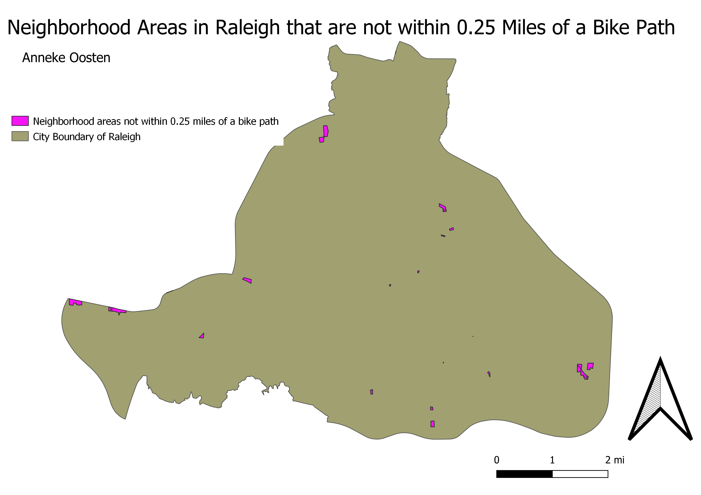

Homework 10: Bike Path Access from Residential Areas
Anneke Oosten
This map is a visual representation of the answer to the question: Which residential areas in Raleigh, NC are not within a quarter mile of a bike path?
This information would be useful to anyone looking for areas to add bike paths to in order to increase access, and make a more cohesive system
The areas considered are only areas that are zoned specifically as neighborhoods, meaning there is no mixed-use development whatsoever. While this is narrow, every zoning type has different issues, and it is worthwhile to focus on each one individually.
This first map shows the bike paths in Raleigh with a buffer of .025 miles. The method used was Buffer.

The second map shows all the ares zoned as Neighborhoods.

The third map shows all the area zoned as Neighborhoods that are not within 0.25 miles of a bike path. The method used was difference.

Data used for this project
Link to bike path data source
Link to zoning data source